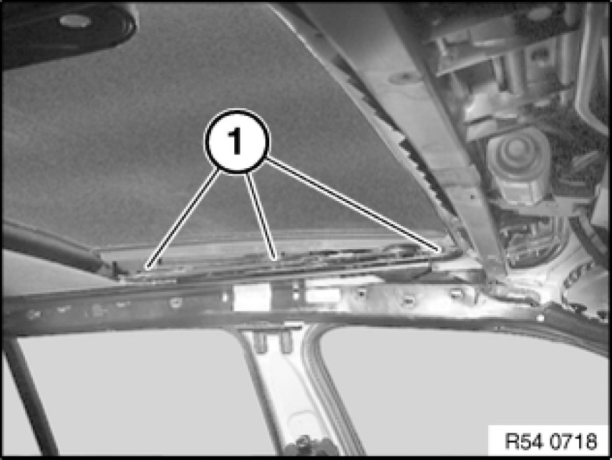
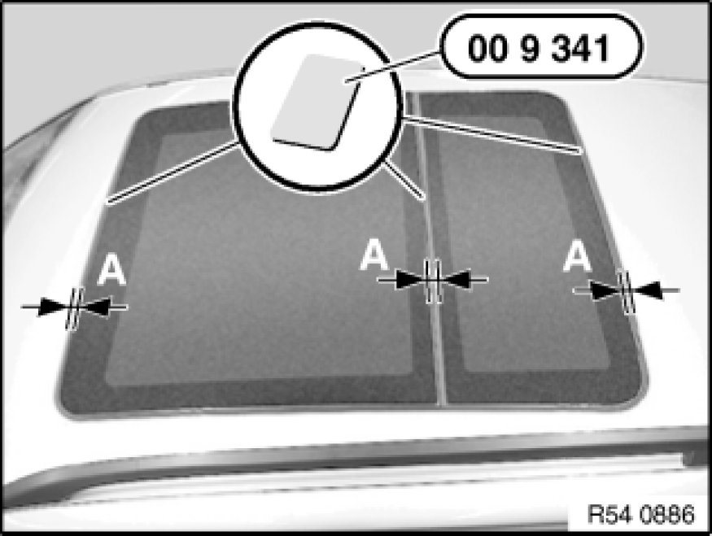
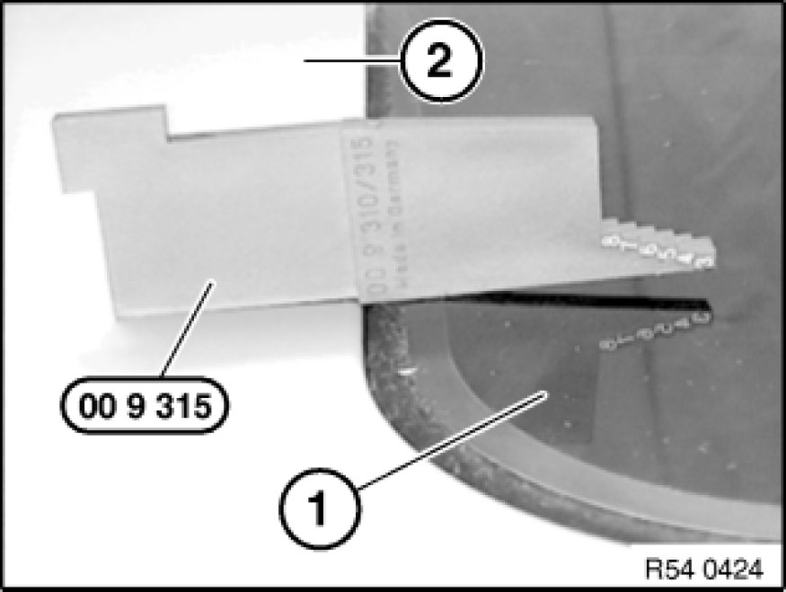

Sunroof / Moonroof: Adjustments
54 13 003 - Adjusting glass slide/tilt sunroof lid

Special tools required:
- 00 9 315 00 9 310 Assembly Wedges (Set in Plastic Case)
- 00 9 340 00 9 340 Disassembly Aid (2 Pieces)

Necessary preliminary tasks:
- Remove gaiter 54 12 015 Replacing Left or Right Gaiter For Glass Slide/Tilt Sunroof on left and right
- Close glass slide/tilt sunroof completely
If the glass slide/tilt sunroof is outside the adjustment tolerances, adjust as follows:

Adjusting glass slide/tilt sunroof unit:
Carry out the following step on one side first and then the other (first left, then right or vice versa):
- Insert Torx screws (1) on left/right so that glass roof panel can still just be adjusted
- Move glass slide/tilt sunroof lid as required
- Make sure all screws are tightened down.
- Tightening torque 54 12 01AZ 54 12 Mechanical Components, Panorama Sunroof.
- Repeat procedure on other side.

Distance setting:
Distance A between body and glass lid (without seal):
A= - 5.8 ± 0.3 mm all round
Check same gap of glass lid and body with special tool 00 9 340 00 9 340 Disassembly Aid (2 Pieces).
Slide special tool 00 9 340 00 9 340 Disassembly Aid (2 Pieces) or similar between seal and insert. It must be possible to slide the card against the same level of resistance.
Slide glass lid towards front or rear until ideal position is reached.

Height adjustment:
Note:
Front glass lid must be adjusted first.
Check height of glass lid (1) in relation to body (2) with special tool 00 9 315 00 9 310 Assembly Wedges (Set in Plastic Case).
Press glass lid (1) at front and rear towards top or bottom until ideal position is reached.
Height:
- Front edge of glass lid at front 0 to 1 mm under roof edge
- Rear edge of glass lid at front 0 to 0.5 mm over glass lid at rear
- Rear edge of glass lid at rear 0 to 1 mm over roof edge
Check function and adjustment.